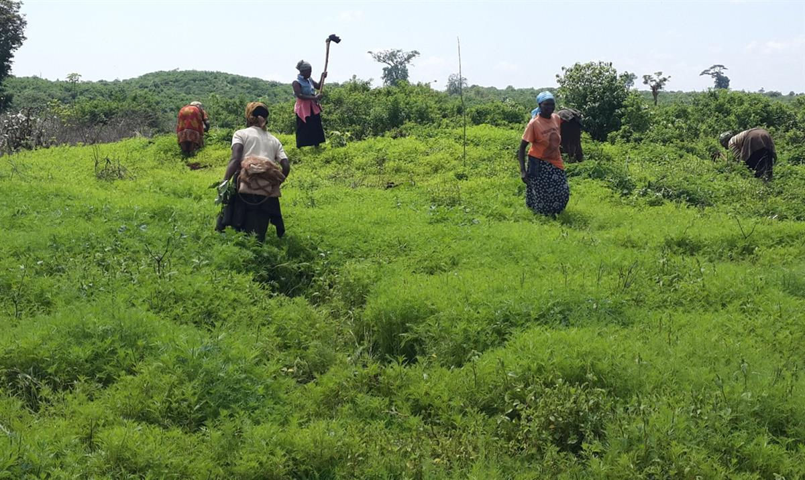
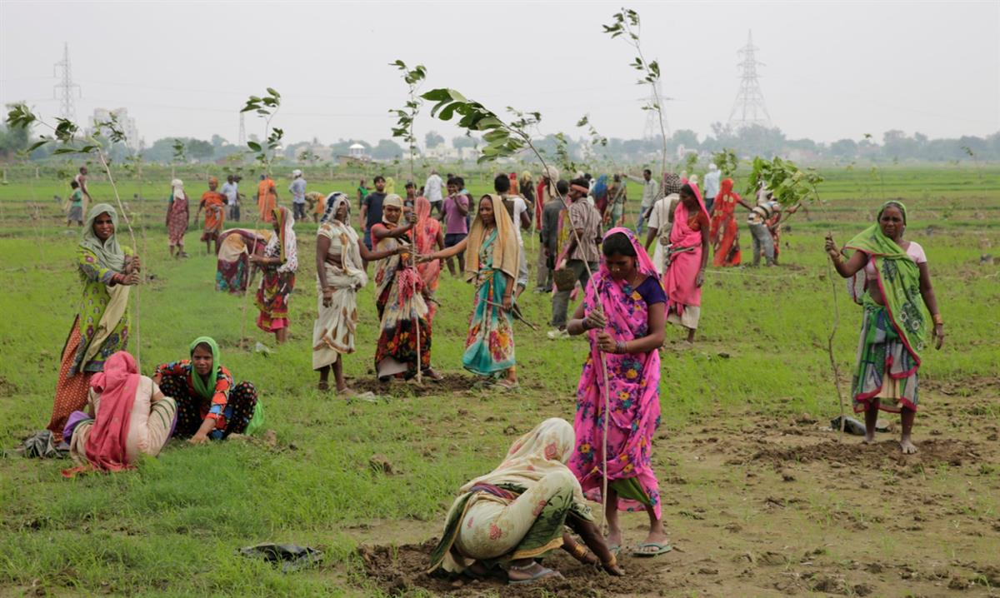
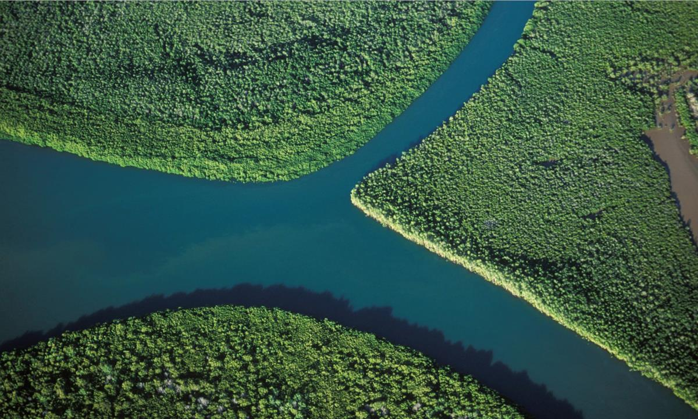
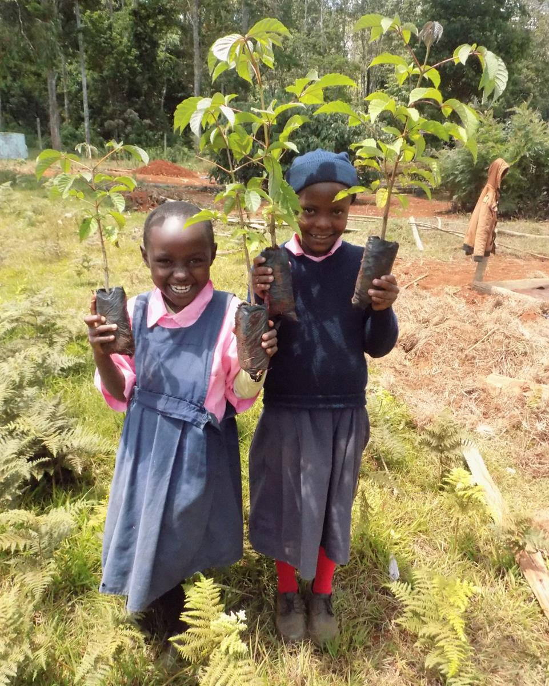
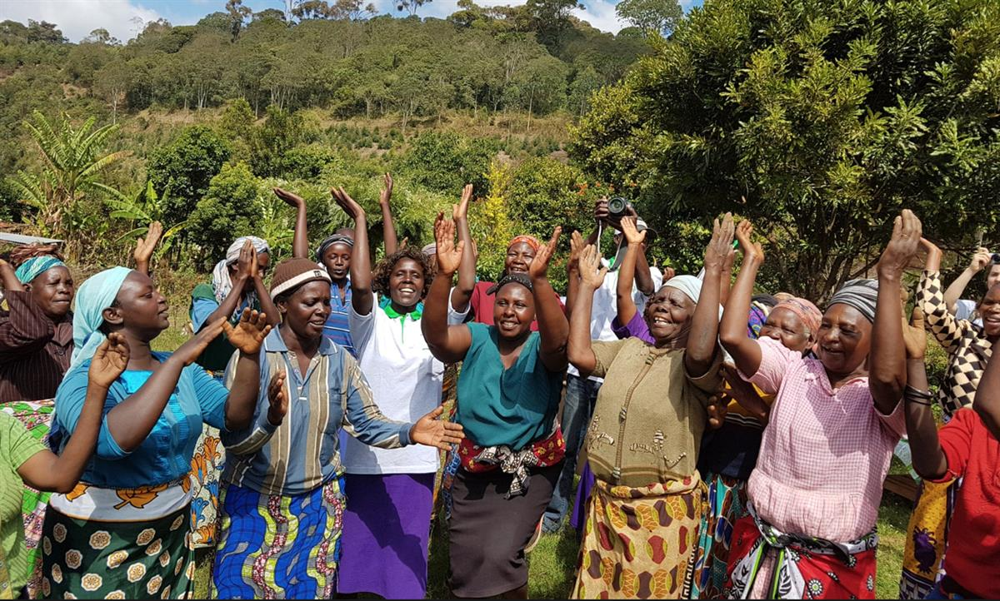

Volunteers plant mangroves in Indonesia. Photograph: NurPhoto/NurPhoto via Getty Images
Volunteers plant mangroves in Indonesia. Photograph: NurPhoto/NurPhoto via Getty Images
Organisations from around the world are reforesting at an unprecedented rate
When Clare Dubois’s car skidded on an icy road in Stroud, Gloucestershire, a tree prevented her vehicle tumbling into a ravine. It was, she says, a sign. Humanity is nearing a precipice. Trees can stop us going over the edge.
This calling was so strong that Dubois, a business life coach, founded TreeSisters with a friend, Bernadette Ryder, to take on a daunting mission: to reforest the tropics within a decade.
In 2014, their new charity funded its first 12,000 trees by encouraging western women to make small monthly donations to reforestation projects in the tropics. Today TreeSisters is planting 2.2m trees (average cost: 33p a tree) each year across Madagascar, India, Kenya, Nepal, Brazil and Cameroon.
“We have to make it as natural to give back to nature as it is to take nature for granted,” Dubois says, musing on the need to “shift from a consumer species to a restorer species”.
She is not alone. The global elite is embracing tree-hugging rhetoric. It is as if the world has suddenly woken up to the restorative powers of plants.
Forests can stop runaway global heating, encourage rainfall, guarantee clean water, reduce air pollution, and provide livelihoods for local people and reserves for rare wildlife. Politicians are waking up to the potential of “natural climate solutions” – reforestation and other ecological restoration – to capture carbon and tackle the climate crisis. Such solutions could provide 37% of the greenhouse gas mitigation required to provide a good chance of stabilising global heating below the critical 2C threshold.
In March the United Nations announced a Decade of Ecosystem Restoration and has set a target to restore 350m hectares – an area bigger than India – by 2030.

Women plant saplings on the outskirts of Allahabad, India, in 2016. Photograph: Rajesh Kumar Singh/APIndia itself has pledged to plant 13m hectares of forest by 2020, Latin America is aiming at 20m hectares and African countries 100m hectares by 2030.
China’s aspiration is to plant an area of forest as large as Ireland every year. Trees are increasingly hailed as a solution for climate-stressed cities too, preventing overheating and reducing air pollution. In England, more than 130,000 trees are to be planted in towns and cities over the next two years.
But it isn’t as simple as just grabbing seeds and saplings and sticking them in the ground. Non-native plantations can cause problems for biodiversity, local livelihoods – or both. Grand pledges aren’t always met. Dubois is only “vaguely heartened” by the new mood. She points out that a 2014 UN declaration pledged to halve deforestation by 2020. Instead, record deforestation ensued and in 2018 an area of primary forest the size of Belgium was lost, the third-highest annual depletion since records began in 2001.
Technology – such as tree-planting by drone – is often hailed as a game changer, but it can be hit-and-miss. “Everybody thinks that smarter technology is going to save us,” says Dubois. “A significant amount of the materials required to be mined for that smarter technology are under the last remaining old-growth forests.”

Women plant saplings on the outskirts of Allahabad, India, in 2016. Photograph: Rajesh Kumar Singh/APTreeSisters refuses to use drones, “because we’re all about the relationship between people and trees”, says Dubois. “It’s the disconnect between people and trees that drives deforestation. We need people connected with forests.”
TreeSisters’ philosophy is different: local, community-based reforestation with native trees in the tropics. “The tropical forest belt provides cooling and rainfall,” says Dubois. “It’s part of the delivery system for a habitable climate for all of us.”
In Madagascar, the charity is helping Eden Reforestation Projects replant lost mangrove and dry deciduous forests on the north-west coast. Mangroves are a wonder-tree for local and global ecosystem services; they protect human communities from coastal floods but also filterriver flows out to sea and prevent soil washing into the ocean and destroying coral reefs. They are also crucial nurseries for juvenile fish. Most importantly, perhaps, studies suggest they can sequester four times more carbon than rainforest. Between 2000 and 2015, the equivalent of Brazil’s annual carbon emissions was released by the destruction of mangrove forests.
Clare Dubois, founder and CEO of TreeSisters. Photograph: Joan Hill/TreeSisters
Eden employs local people to gather and plant mature propagules from mangroves. These seedlings usually fall from the tree and stick straight in the mud or float away until they reach another shore and grow. The mangrove-planters also clear debris from the forest because logs and debris shifted by the currents can destroy seedlings. (The debris is piled in particular spots so it creates wildlife habitat.) At most planting sites, the two-week tide cycle contains a six-day window when planters can canoe into the mangroves, plant propagules and catch the outgoing tide before they get stranded on the mudflats at low tide.
“Our goal is twofold: reforestation and poverty alleviation,” says Jamie Shattenberg, international director of Eden Reforestation Projects, Madagascar. “If you’re going to do reforestation and you ignore the human issue – poverty – it’s difficult to find success, because the forest is what people turn to last if they have no other sustainable livelihood.”
In the project’s first year, eight people planted 100,000 mangroves. Now Eden employs more than 1,000 people to plant trees, with 225m new mangrove trees planted since 2006. Some Malagasy planters were enslaved to local fish barons because they owed money for using their fishing equipment; tree-planting income has enabled them to repay their debts and escape this bondage.
Restoring coastal mangroves is not simple. Eden plants mainly on government and community land along the coast, with the support of local villages. Most mangrove is no-man’s land but people still claim rights to establish shrimp farms or raid forests for timber for building and charcoal.
“The thing that’s really now destroying them is charcoal,” says Shattenberg. “Once a mangrove forest is cut down it takes generations to refill, the mud starts eroding and kills the reef and a negative cycle starts. We’ve had areas tree-poached, and we’ve put guards in. Charcoal is a constant problem, and you can’t change it overnight because so much of Madagascar relies on charcoal for their cooking. It’s like telling England and France ‘no more gas’. You have to find a different source of fuel and make it affordable.” Then there is a “charcoal mafia”: “You get in the way of charcoal directly and you’re in the way of people’s money and people don’t like that.”

In Madagascar, TreeSisters is helping the Eden Reforestation Projects plant lost mangrove trees along the coast. Photograph: Jouan & Rius/Nature Picture Library/Getty Images/Nature Picture LibraryShattenberg is optimistic, however, about visible changes to the environment – and consciousness. “Massive areas are starting to come back and the Malagasy are seeing changes in the fish, crab and wildlife populations. We’re seeing a change in how people feel about the forest. They recognise they can protect it. It’s for Madagascar, for the Malagasy people and it’s for the future of our world.”
A similar emphasis on reforestation for local people is driving the restoration of deforested Mount Kenya. TreeSisters is working with the International Tree Foundation (ITF), a charity founded in 1924 by a visionary forester in colonial Kenya called Richard St Barbe Baker. The charity was originally called Men of the Trees. Now it is supporting reforestation led by local women.

Two Kenyan girls carry seedlings, the sales of which provides local charity groups with an income that is then distributed as loans to help women’s farms and businesses. Photograph: Courtesy of International Tree Foundation
“One of the very clear learnings we’ve had is that the more you can work with local organisations that are women-led or driven by women, the better your results,” says Paul Laird, programmes manager at the ITF. “It is the women’s groups that really drive and motivate, and men are often pleased to have women running it.”
Kenya is water-stressed, and dependent on seasonal rains for its water supply. Forest cover can influence rainfall and local humidity and temperature, as well as filter water. The country’s current forest cover is a meagre 7% at best; Kenya’s constitution commits to increasing it to 10%. Kenya has also signed the African Forest Landscape Restoration Initiative (AFR100) commitment to restore 5.1m hectares of degraded land in Kenya. But such targets are not yet creating much traction on the ground, according to Laird.
Below Mount Kenya is a circle of humid montane forest. Google Earth reveals it is decidedly patchy. “What happened to the forest? The 20th century happened to the forest,” says Laird. The colonial regime harvested native forest and replaced it with eucalyptus and pine plantations – non-native monocultures that are “a killer in terms of biodiversity”, according to Laird. After independence, commercial gangs took timber and both rich and poor turned forest into farmland.
The ITF is supporting local charities such as Mount Kenya Environmental Conservation to work with local women to establish small nurseries of native trees at the forest fringe. The sales of these tree seedlings provide the groups with an income, which is then distributed as loans to help women’s farms and businesses. Native trees are planted directly into deforested areas, while a new scheme enables local people to temporarily grow potatoes in reforested areas, the cultivation helping native trees grow free of weeds for their first few years. The women also grow high-value grafted trees such as avocado and macadamia nut on their own burgeoning agro-forestry farms.
“Women are the primary caretakers of the household and know their reliance on a healthy forest,” says the Nairobi-based Teresa Gitonga of the ITF. “They are the people who look for firewood, they are the people who cook so they also look for water. Women are change agents. The only thing they need is to unlock their potential and know that planting trees will make their lives better.”
According to Anastacia Njoki, a member of a tree-planting group close to Mount Kenya, she and her fellow agro-foresters share experiences, as well as sing together.

A tree-planting group close to Mount Kenya: the agro-foresters share experiences as well as sing together. Photograph: Courtesy of International Tree Foundation“We are doing it because we are the ones who have to collect the firewood. Instead of cutting a large tree, we are collecting dead wood,” she says. But she recognises the wider benefits of trees to the region and Kenya itself. “The trees that we are planting are indigenous and we as a community are benefiting in one way or another to conserve our ecosystem and maintain the areas where our water is coming from,” she says. Mount Kenya’s forests, she says, make it their “water tower”.
In western countries, TreeSisters continues to raise awareness of a feminine way of responding to ecological crises and climate change, and the need to balance consumption with restoration. Dubois wants to embed restoration into every financial transaction: in other words, everything we buy must also include “a kickback to nature”.
“Extinction Rebellion has blasted through collective denial and there’s suddenly a longing for solutions,” says Dubois. “We’re saying: ‘Let’s not wait for the government, we the people are the solution and can drive massive change.’ We’re talking about how we can move from rebellion to restoration.”
It may be difficult to measure how awareness is raised, but perhaps it can be guided by the straightforward measurement that is planting trees. As Dubois puts it: “It’s tangible, it’s simple, it’s life-giving.”
SOURCE: THE GUARDIAN